Região Autónoma dos Açores — Estudo Detalhado do Local · P0–P5
Grupo 3 · Rua Atlântida, Sete Cidades (Ponta Delgada, São Miguel) · NUTS III Região Autónoma dos Açores · Inteligência Artificial Aplicada na Arquitetura · Setembro 2026
“Entre cratera e cidade” — aldeia de 701 hab. na caldeira, entre a Lagoa Azul e a encosta.
P0 — Localização
Arquipélago:AçoresNUTS I/II/III:PT2 / PT20 / PT200 — Região Autónoma dos Açores (única desde 2024)Município:Ponta Delgada (São Miguel) — 233 km², 24 freguesiasSítio:Rua Atlântida, Sete Cidades — margem da Lagoa AzulCoordenadas:37,859833° N, 25,790972° W · 262 m
Verificação: conversão DMS confirmada, sem correção. Pin na margem da Lagoa Azul.
P1 — Quadro Socioeconómico
Ponta Delgada: 67 229 hab. (28% dos Açores em 10% do território) · sede do Governo Regional e centro económico, administrativo e universitário.
P1-TAB — quadro socioeconómico
Indicador
Ponta Delgada
Açores (NUTS III)
Ano
População
67 229
236 413
2021
Variação 2011–2021
−2,3%
−4,2%
2021
Envelhecimento
104,9
113,2
2021
Densidade
288,6 hab/km²
101,8 hab/km²
2021
Alojamentos
29 150
113 159
2021
Ensino superior
28,9%
22,4%
2021
Desemprego
7,8%
6,9%
2021
Poder de compra (PT=100)
102,2
87,6
2023
Síntese P1
Centralidade: 28% da população em 10% do território; 288,6 vs 101,8 hab/km².
Resiliência: −2,3% vs −4,2% — a capital perde menos.
Mais jovem: envelhecimento 104,9 vs 113,2.
Capital humano: 28,9% com ensino superior vs 22,4%.
Poder dual: único IpC acima da média (102,2) mas com mais desemprego (7,8%).
«Ponta Delgada é o polo demográfico, educativo e económico dos Açores: 28% da população, poder de compra acima da média e estrutura mais jovem.»
P2 — Caracterização do Lugar
Margem da Lagoa Azul, interior da caldeira (5 km) — Paisagem Protegida, Geoparque UNESCO. Aldeia de 701 hab., núcleo linear de 1–2 pisos.
+
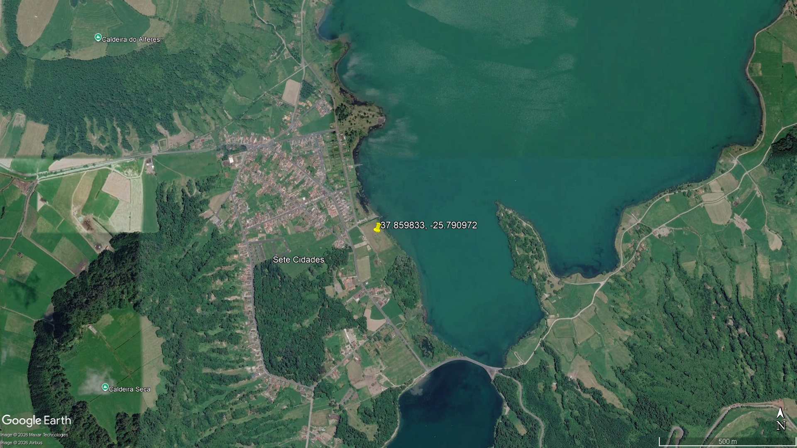
ORTO 500MOrtofotomapa 500 m — pino no sítio.
+
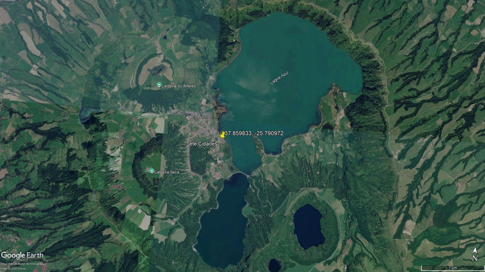
ORTO 1KMOrtofotomapa 1 km — caldeira.
+
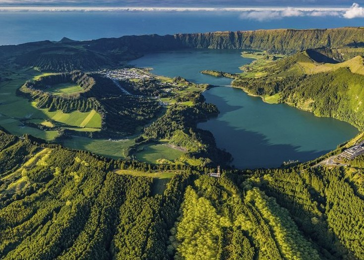
VISTA 01Vista 01 — caldeira.
+
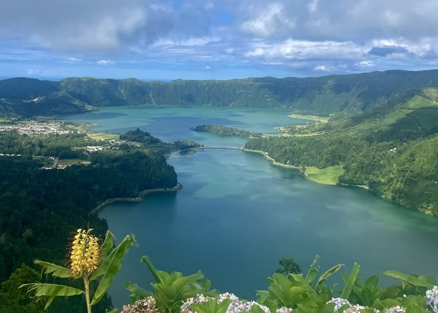
VISTA 02Vista 02 — Vista do Rei.
+
VISTA 03Vista 03 — ponte e igreja.
+
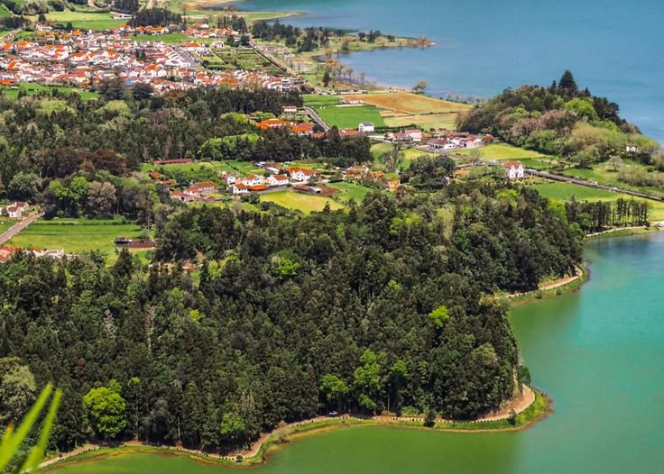
VISTA 04Vista 04 — núcleo e lagoa.
+
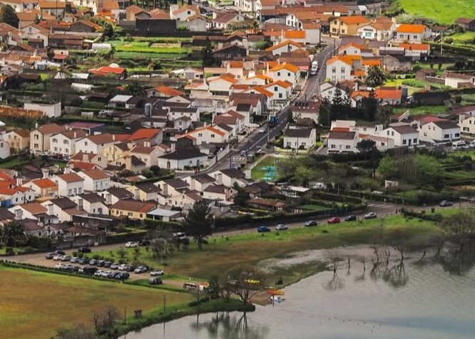
VISTA 05Vista 05 — margem e cais.
+
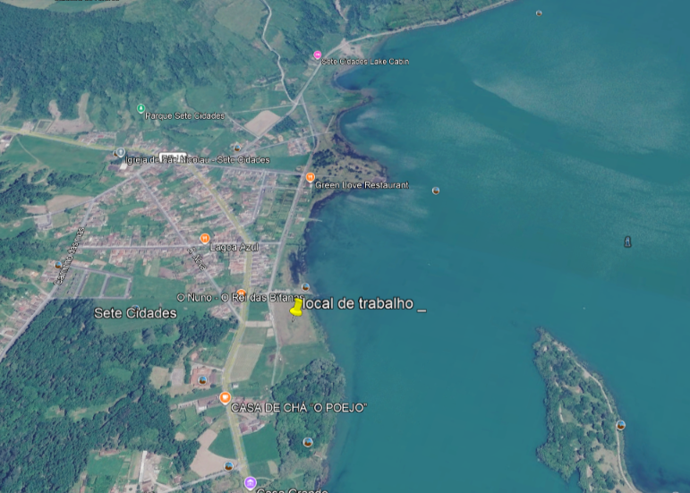
LOCALLocal de trabalho e serviços próximos.
Nove dimensões — essencial
Dimensão
Estado
Implicação
Paleta
Verdes, azul da lagoa, branco, telha vermelha, basalto.
Usar madeira, basalto e reboco claro.
Solos
Andossolos vulcânicos, húmidos e brandos.
Drenagem + fundações adequadas.
Vegetação/fauna
Criptoméria, laurissilva, endémicas; invasoras a controlar.
Só nativas; proteger margens.
Sismo
Elevado — rift ativo, 30% em alta suscetibilidade.
Construção antissísmica; evitar faixas críticas.
Cheia
215 mm/24h (T100); lagoa non aedificandi.
Afastar da margem; cotas + permeáveis.
Incêndio
Sem histórico; criptoméria combustível.
Faixa 10–20 m; acessos e água.
Poluição/ruído
Sem indústria; sítio quieto; lagoas Razoável/Medíocre.
Figura-fundo: a Rua Atlântida é a dobradiça entre aldeia e água — construir pontuado sobre o verde, não frente sobre a lagoa.
Três pistas
Recuar da água: pegada mínima fora da cheia; reabilitar e qualificar a margem.
Construir para o risco: drenagem, tampão nativo, antissísmica, faixa anti-incêndio.
Encaixar na aldeia: 1–2 pisos, muros de pedra, programa Geoparque.
P3 — Clima e Primeira Massa
Clima Csb (verão seco e suave) · EPW aeroporto 085120 (78 m, 15 km) · IPMA est. 513 (35 m, 17 km, 1991–2020) · sítio 262 m (~−1,2 °C). Projetar para 30 °C.
Estações
Referência
Valor
Sítio
37,859833° N, −25,790972° W · 262 m
EPW 085120
Aeroporto PDL · 78 m · 15,3 km
IPMA 513
Afonso Chaves · 35 m · 1991–2020 · 16,9 km
Temperatura média mensal (°C) — EPW vs IPMA
2520151050
14,8|15,1
J
14,2|14,8
F
14,4|15,2
M
14,9|16,0
A
16,2|17,4
M
18,4|19,6
J
20,7|21,8
J
21,8|23,0
A
21,3|22,1
S
19,0|19,8
O
17,1|17,4
N
15,5|15,9
D
EPWIPMAAno: ~17,4–17,6 vs 18,2 °C
Leitura: mesma sazonalidade com pico em agosto; IPMA sempre acima; EPW −0,3…−1,2 °C. Convergem (~1 °C).
Precipitação mensal (mm) — EPW vs IPMA
23018413892460
115|102
J
46|87
F
88|97
M
92|80
A
27|61
M
70|44
J
18|26
J
16|46
A
88|78
S
139|118
O
101|95
N
219|153
D
EPWIPMAAno: ~1 019 / 998 vs 987,5 mm
Leitura: pico em dezembro nas duas; padrão out–mar húmido / jun–ago seco — seca de verão Csb (jul 26 mm nas duas). Para precipitação, vale IPMA.
Seis pontos + duas regras
Calor: pico em agosto — projetar para 30 °C.
Vento: NW–NE, 3,6 m/s no verão → ventilação cruzada.
Chuva: dez ~150 mm, jul 26 mm, T100 215 mm → drenagem + cisterna.
Noites: suaves, sem geada → arrefecer sem AC.
Sol: sombrear S–W no verão; admitir sol de inverno.
Humidade: 77–84% → invólucro respirável.
Barra E–W: ventilar NW–SE; vidro S sombreado; W cego.
Base seca: piso elevado + permeáveis; beirais de verão; pátio a SE.
Leitura: médias e chuva convergem; picos divergem (26,6 vs 30,1 °C) — vale IPMA para chuva, máximo real para calor.
Porta elevada, cozinha/forno como coração, falsa para quartos.
Casas integradas; moinhos do Corvo/Santa Maria.
R3 — Muro, quintal e cisterna
Pedra seca, horta, cobertura a recolher água.
Quintais das Furnas; Graciosa.
Duas obras de referência (proximidade)
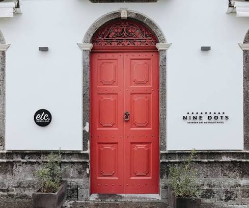
NINE DOTS (2016–2024, knn) — Rua dos Mercadores; 36 quartos; basalto, cal, jardim de endémicas.
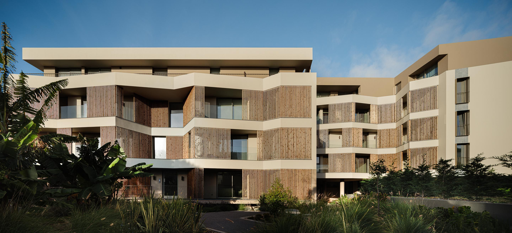
Edifício / Condomínio Ernesto do Canto (BOX Arquitectos — Bárbara Morgado & Óscar Catarino; col. Fabiana Velho Cabral, Emanuel Gomes, Marília Hipólito; 2025; fot. Ivo Tavares) — habitação em São Pedro, Ponta Delgada; 5 290 m², fogos T1–T5; dois lotes em cotas distintas, atravessamento, luz/ar, jardim público/privado interior, ventilação natural (“disrupção harmoniosa”); volumes curvos e jardim.
Tendência: reabilitar com matéria local — basalto, cal, endémicas; construir com o lugar.
P5 — Síntese e Programa
30 segundos: barra E–W (barata, ventila, visível) × pátio em L (integra, dá exterior, mais fundações) · 450 m² / 3 fogos.
SWOT
Forças
S1 · 28,9% com ensino superior (2021)
S2 · IpC 102,2 · Densidade 288,6
Fraquezas
W1 · Desemprego 7,76% (2021) · Quebra −2,3%
W2 · Sismo elevado · Margem protegida
Oportunidades
O1 · Paisagem Protegida + Geoparque
O2 · Clima Csb · Vento 3,6 m/s
Ameaças
T1 · Cheias: 215 mm/24h (T100)
T2 · Aldeia a perder população (−2,3%; RAA −4,2%)
37,859833° N, 25,790972° WAltitude ~262 mEPW 085120 Ponta Delgada–João Paulo APKöppen Csb
Duas volumetrias
Opção A / V1 — Barra compacta E–W
Pró: eficiente e barato; ventila e sombreia numa só geometria.
Contra: muito visível; expõe o W; pouca exterior.
Opção B / V2 — Dissociados com pátio / Pátio fragmentado em L
Pró: integra na paisagem; pátio privado com endémicas.
Contra: mais fundações e custo; mais drenagem.
Programa — 450 m² / 3 fogos
Espaço
m²
Un.
Fogo T2 (75 m²)
150
2
Fogo T3 (110 m²)
110
1
Pátio-jardim com endémicas + cisterna
120
1
Arrumos / técnica
20
1
Estacionamento (25 m²/lugar)
50
2
Total indicativo
450
3 fogos
Fluxo: Reabilitar ▸ Interpretar ▸ Percorrer ▸ Gerir água ▸ Apoiar. Escala da aldeia (1–2 pisos).
Verificar no local (clica para marcar)
Verificar:
Cotas, limites, edificado e vestígios de cheia.
Sondagens, nível freático, redes e ligação.
Sol, vento, ruído, margens, muros e flora a preservar.
Ex.2 - Imagem AI
João – Lia – Belisa: original, prompt, gerada – em ChatGPT e Gemini. Use as setas ou os nomes para circular entre os três.
João — Ex.2
Report: inputs e outputs
ChatGPT
Imagem Original
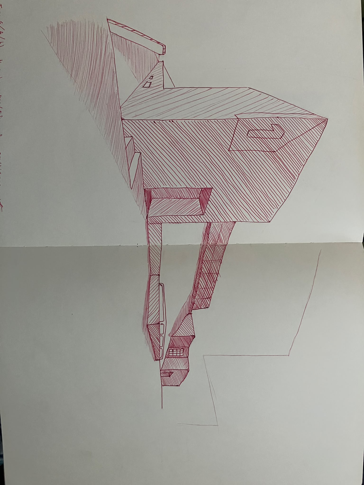
Prompt 1
**BUILDING**
I wanted as Torre do TOmbo de Lisboa
An archive building
**CONTEXT**
Add 3 trees aligned, add 5 people circulating in or out of the building entries.
Clear sky, but don't show the sun
**MATERIAL**
Use the Torre do Tombo de Lisboa as a reference facade for the materiality.
Consider the building is 50 years old
**LIGHT**
The perspective is looking to SouthWest, consider is 15h on spring season on Lisbon. Intensify the projected shadow
**STYLE**
Make a hyperrealistic photo out of this drawing made in two pages of a notebook, please remove the pages fold without disturb the drawing perspective
**PRESERVE**
Preserve the buildings geometry, and placement
Don't change the perspective point of view
Imagem 1
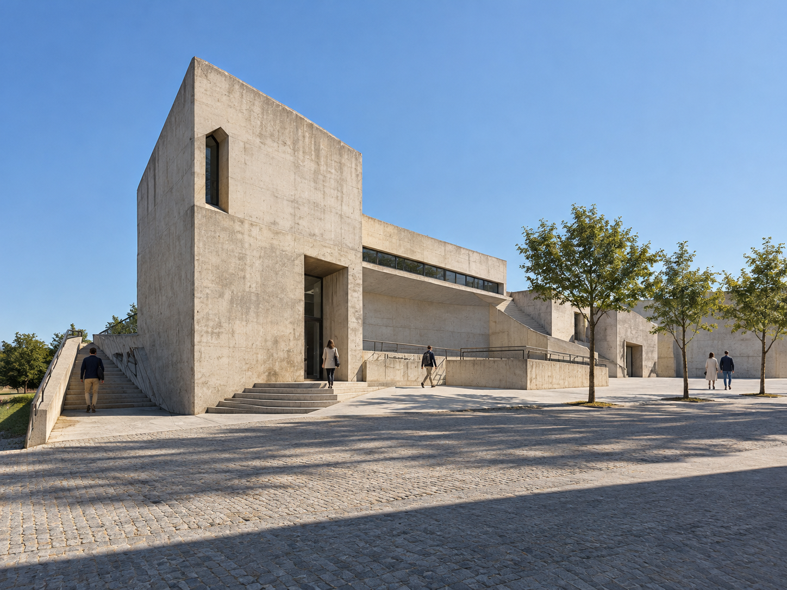
Prompt 2
**BUILDING**
Programme, volume, fixed elements and viewpoint.
**CONTEXT**
Site, city, vegetation, uses and human presence.
Make the trees 50% bigger and wider, below them add benches, two people sitting
Add more 8 people, adults
**MATERIAL**
Matter, texture, ageing and level of detail.
Change the facade to look like the reference image I attached, it's the Centro Cultural de Belém, Lisbon
**LIGHT**
Time, orientation, atmosphere, intensity and contrast.
**STYLE**
Visual language, realism, framing and references.
**PRESERVE**
Preserve the light, style and building
Imagem 2
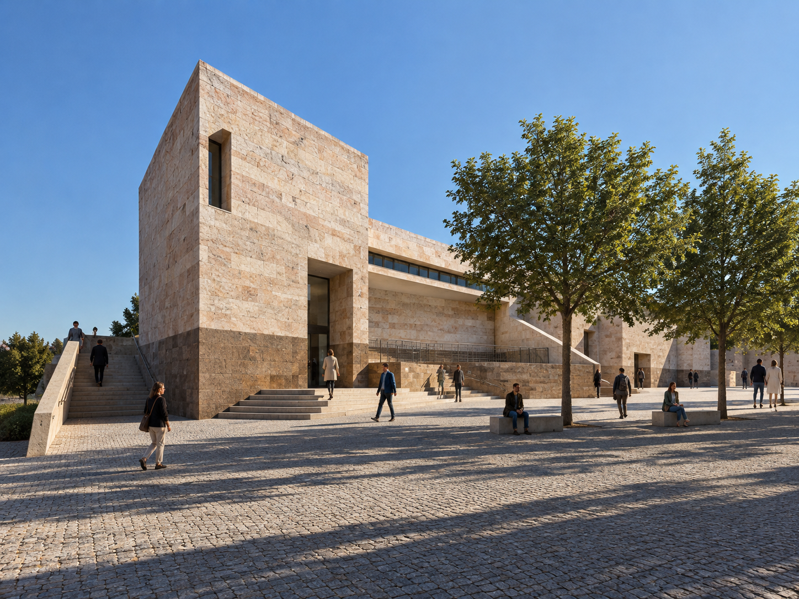
Gemini
Imagem Original
Prompt 1 — Gemini
BUILDING
I wanted as Torre do TOmbo de Lisboa
An archive building
CONTEXT
Add 3 trees aligned, add 5 people circulating in or out of the building entries.
Clear sky, but don't show the sun
MATERIAL
Use the Torre do Tombo de Lisboa as a reference facade for the materiality.
Consider the building is 50 years old
LIGHT
The perspective is looking to SouthWest, consider is 15h on spring season on Lisbon. Intensify the projected shadow
STYLE
Make a hyperrealistic photo out of this drawing made in two pages of a notebook, please remove the pages fold without disturb the drawing perspective
PRESERVE
Preserve the buildings geometry, and placement
Don't change the perspective point of view
Gemini 1
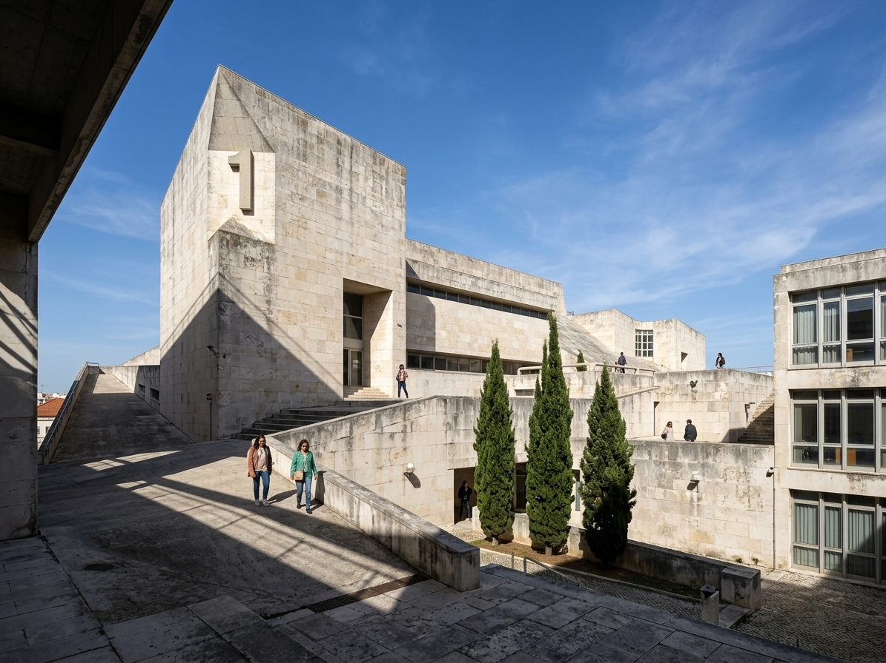
Prompt 2 — Gemini
BUILDING
Maintain the central building on the centre of the perspective, however remove the side building on the right, use that area as walkable space for the people
And remove the structure on top of the photographer, we can see it's wall on the left and the shadow projected on the ground
CONTEXT
The building is on the top of a hill, so we can't see other buildings around it
Make the trees 200% bigger, and expand their soil by 100%
All the pavement should be calçada Portuguesa (first image attached), besides the ramps
Add more 8 people, adults, balance the amount of women and men
MATERIAL
Change the facade materiality to the same as the CCB Lisbon (second image attached), consider the building age of 50 years
LIGHT
Time, orientation, atmosphere, intensity and contrast.
STYLE
Visual language, realism, framing and references.
PRESERVE
Preserve the light and the style
Gemini 2
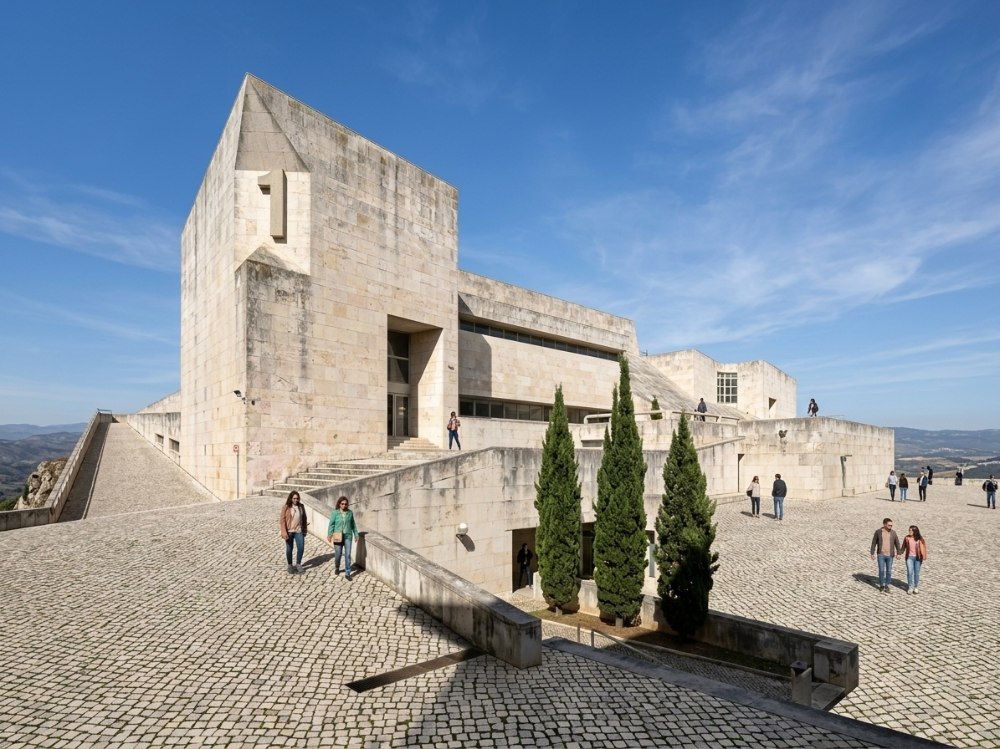
ChatGPT
OriginalImagem 1Imagem 2
Gemini
OriginalGemini 1Gemini 2
Lia — Ex.2
Report: inputs e outputs
ChatGPT
Imagem Original 01
Prompt 01
EDIFÍCIO
- Uma recepção de um consultório,
CONTEXTO
- Deixe uma faixa da cortina a direita aberta indicando o local do edifício inserido,
local: vista para a ponte 25 de abril Lisboa, Portugal.
- Adicione a presença humana de acordo com o uso do edifício (recepção de um consultório).
MATERIAL
- Ao fundo da imagem, modifique o painel de textura quadriculada e coloque uma parede de cobogós na cor terracota. Na poltrona jangada à esquerda da imagem, retire e adicione um balcão de recepção, em madeira e tampo de pedra branca. A luminária branca a esquerda retire-a.
LUZ
- Manter iluminação existente na imagem.
ESTILO
- Manter a linguagem visual da imagem. Adapte o material desta imagem ao novo contexto visual.
PRESERVAR
- Preservar enquadramento da imagem. Preservar poltronas brancas existentes na imagem, mesas de centro.
Imagem 01 — ChatGPT
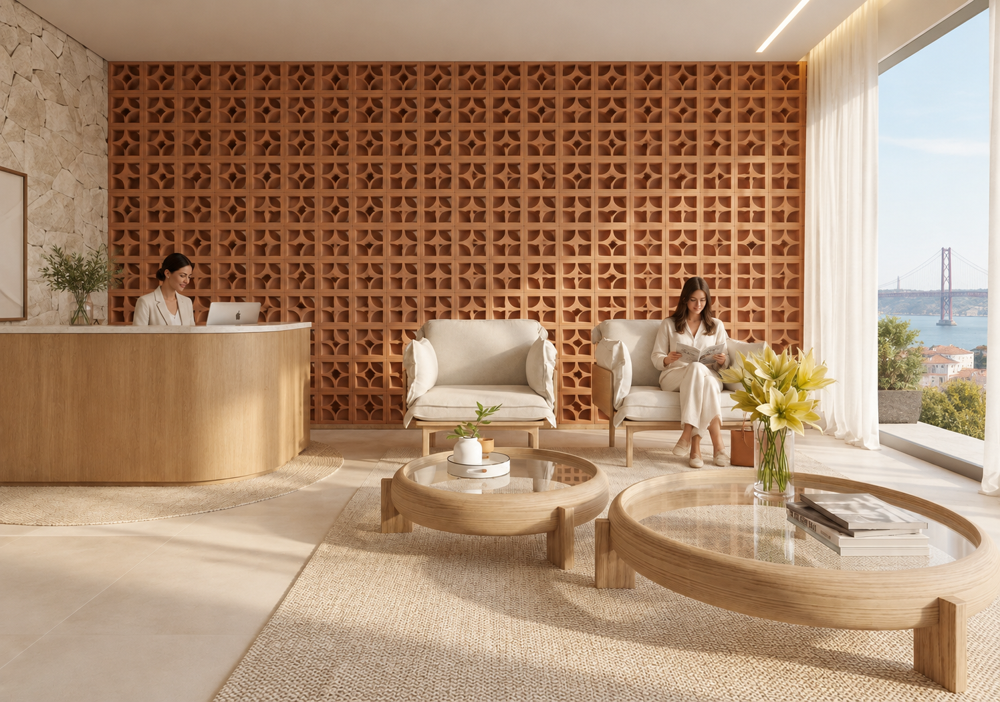
Estudo 02
Imagem Original 02
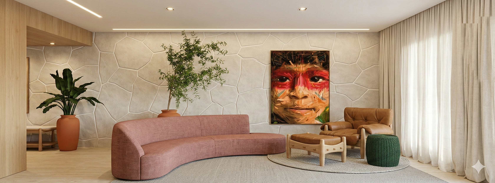
Prompt 02
EDIFÍCIO
- Um salão de um restaurante
CONTEXTO
- Deixe uma faixa da cortina a direita aberta indicando o local do edifício inserido,
local: vista cristo redentor rio de janeiro
- Adicione a presença humana de acordo com o uso do edifício (salão de restaurante)
MATERIAL
- Retire o sofá, as poltronas e os tapetes. Adicione mesas de madeira, cadeiras em madeira e detalhes em palha. coloque centros de mesas pequenos que harmonizem com o estilo do ambiente.
LUZ
- Manter iluminação existente na imagem.
ESTILO
- Manter a linguagem visual da imagem. Adapte o material desta imagem ao novo contexto visual.
PRESERVAR
- Preservar enquadramento da imagem. Preservar vasos de plantas, quadros decorativos, assento à esquerda da imagem.
Imagem 02 — ChatGPT
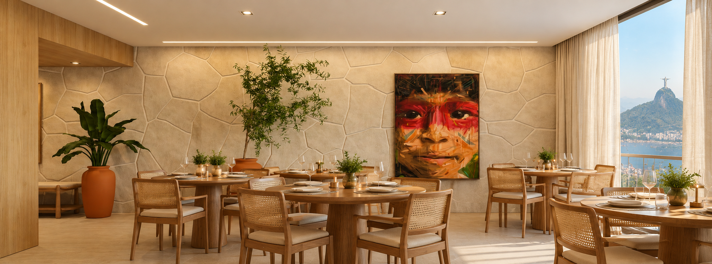
Gemini
Imagem Original 01
Prompt 01 — Gemini
EDIFÍCIO
- Uma recepção de um consultório,
CONTEXTO
- Deixe uma faixa da cortina a direita aberta indicando o local do edifício inserido,
local: vista para a ponte 25 de abril Lisboa, Portugal.
- Adicione a presença humana de acordo com o uso do edifício (recepção de um consultório).
MATERIAL
- Ao fundo da imagem, modifique o painel de textura quadriculada e coloque uma parede de cobogós na cor terracota. Na poltrona jangada à esquerda da imagem, retire e adicione um balcão de recepção, em madeira e tampo de pedra branca. A luminária branca a esquerda retire-a.
LUZ
- Manter iluminação existente na imagem.
ESTILO
- Manter a linguagem visual da imagem. Adapte o material desta imagem ao novo contexto visual.
PRESERVAR
- Preservar enquadramento da imagem. Preservar poltronas brancas existentes na imagem, mesas de centro.
Imagem 01 — Gemini
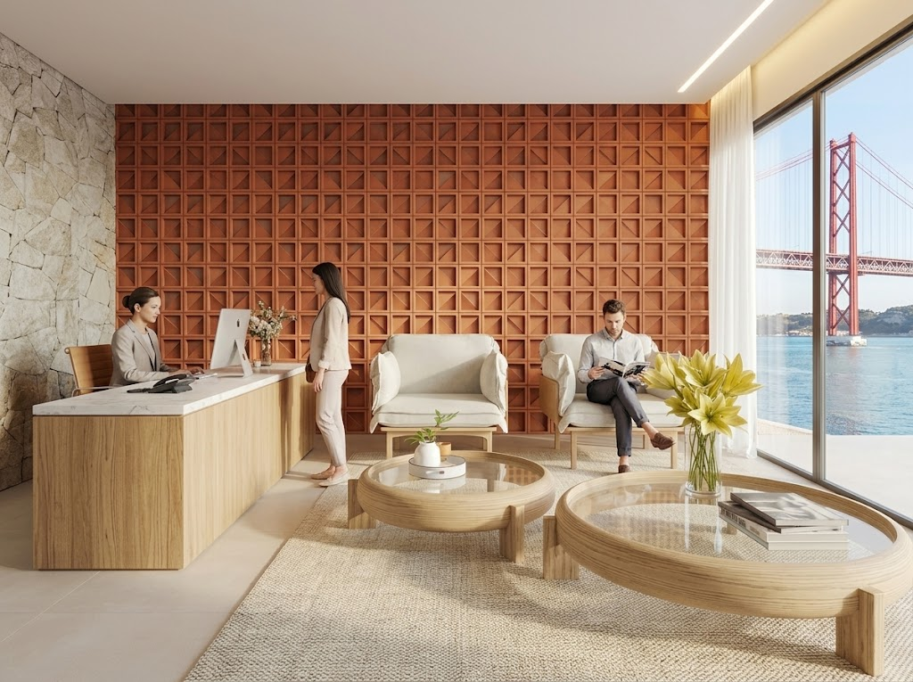
Estudo 02
Imagem Original 02
Prompt 02 — Gemini
EDIFÍCIO
- Um salão de um restaurante
CONTEXTO
- Deixe uma faixa da cortina a direita aberta indicando o local do edifício inserido,
local: vista cristo redentor rio de janeiro
- Adicione a presença humana de acordo com o uso do edifício (salão de restaurante)
MATERIAL
- Retire o sofá, as poltronas e os tapetes. Adicione mesas de madeira, cadeiras em madeira e detalhes em palha. coloque centros de mesas pequenos que harmonizem com o estilo do ambiente.
LUZ
- Manter iluminação existente na imagem.
ESTILO
- Manter a linguagem visual da imagem. Adapte o material desta imagem ao novo contexto visual.
PRESERVAR
- Preservar enquadramento da imagem. Preservar vasos de plantas, quadros decorativos, assento à esquerda da imagem.
Imagem 02 — Gemini
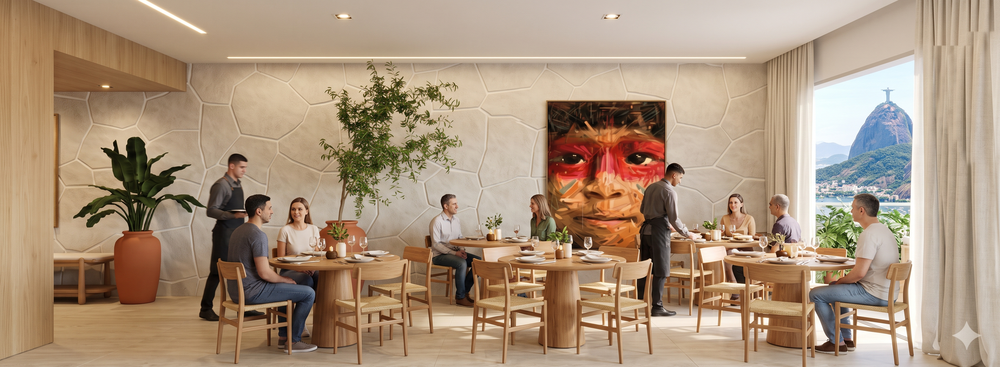
ChatGPT
Original 01Chat 01Chat 02
Gemini
Original 01Gemini 01Gemini 02
Belisa — Ex.2
Report: inputs e outputs
Imagem Original
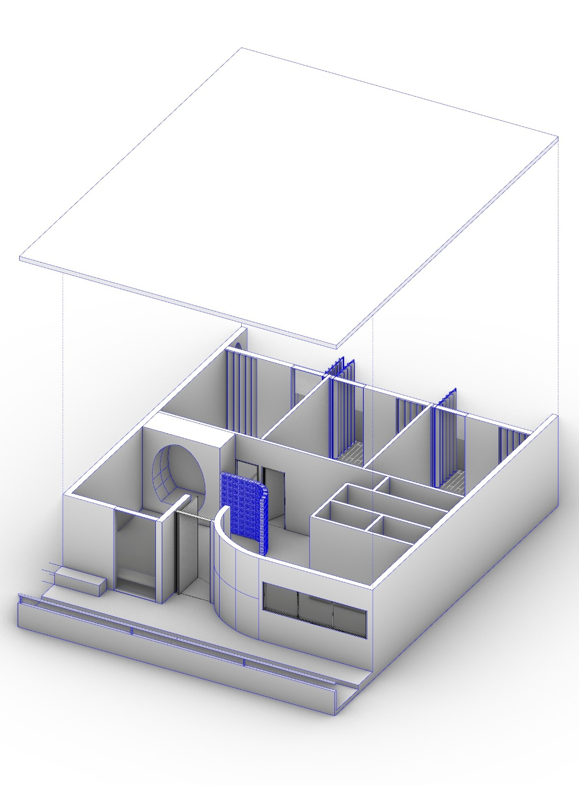
Prompt 1
PRIMEIRO RESULTADO DA PRIMEIRA PROMPT
EDIFÍCIO
uma habitação unifamiliar, que mantenha uma ponto de vista sendo uma axonometria expandida,
MATERIAL
As zonas íntimas e sociais tenham uma material no piso diferente, as àreas húmidas em cerâmica e as zonas madeiras, os vidros virados pra galeria tem de ser fosco, e o banco no exterior um calcário de tom claro bujardado, e o pavimento da galeria seja no mesmo tom suave.
o ninho na esquerda em formato oval quero que o fundo seja num bordo, e a corva lado ao lado seja em cobogó
LUZ
e quero uma luz suave no interior,
ESTILO
linguagem visual, realismo,
PRESERVAR
preservar a forma e composição do edifício
Imagem 1 — Gemini
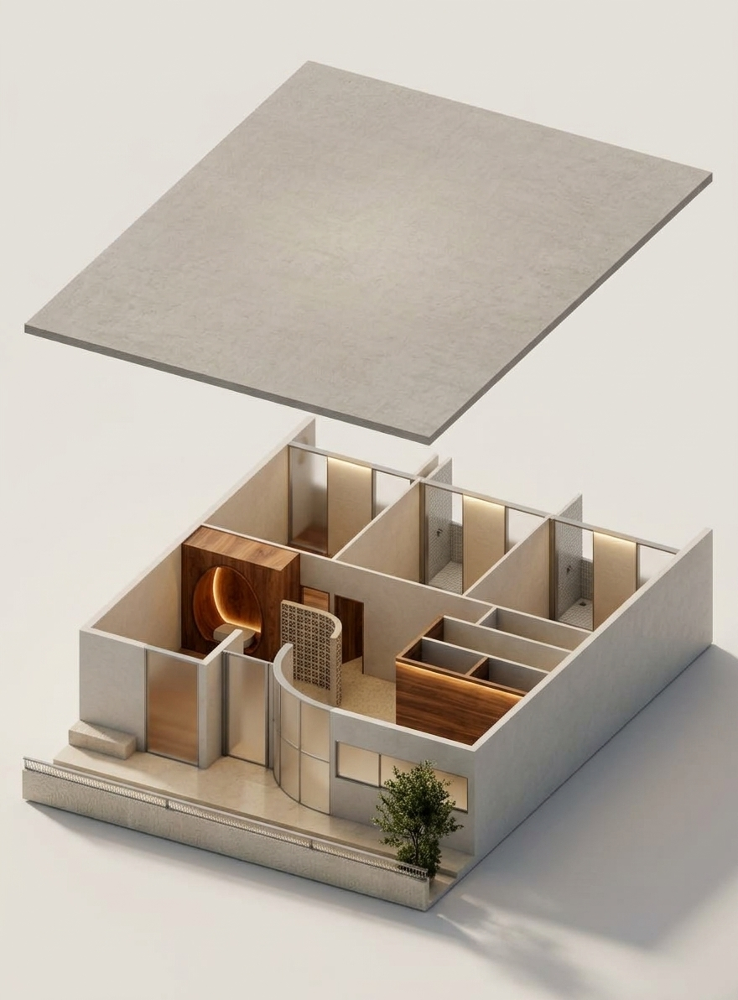
Prompt 2
SEGUNDO RESULTADO DA SEGUNDA PROMPT
"Nota": o programa obteve dificuldades em manter as proporções reais do projeto mesmo sendo fornecida a base da planta para saber manter a proporções dos espaços
Na planta indiquei o ponto de vista ( uma seta a vermelho ) para onde eu queria fosse a vista fosse direcionada , agora quero que o ponto de vista seja ao nível do olho humano, e o fundo do nicho ao invés de ser em madeira quero que seja em bordô e tenha uma pessoa sentada nele e a parte curva seja em cobogó, e não quero preservar as proporções verdadeiras na qual forneci através da planta
Tries
Tentativa 01
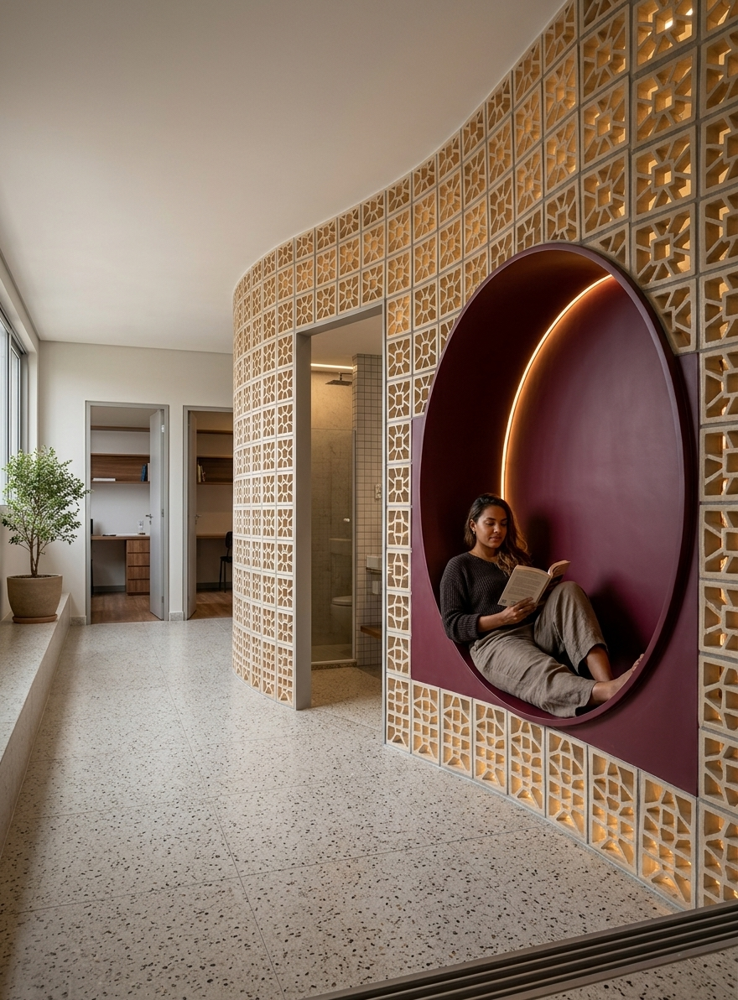
Tentativa 02
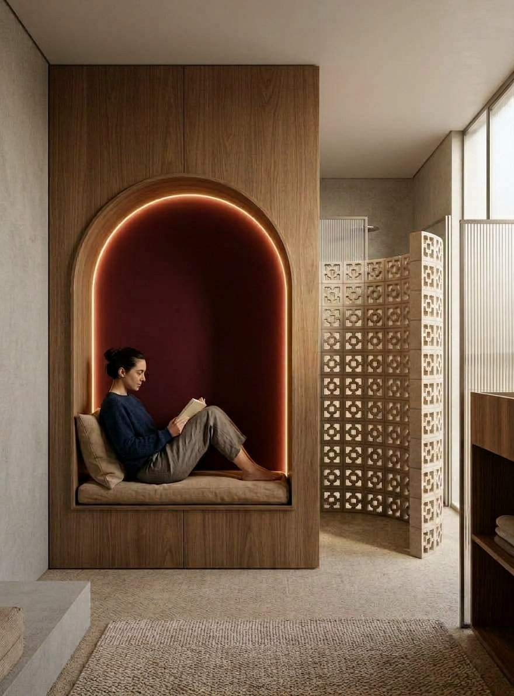
Belisa
OriginalImagem 1
Tries
Tentativa 01Tentativa 02
Versão de grupo v2: Belisa Correia · João Baptista · Lia Magalhães · tabelas simplificadas, fontes verificadas por P# (ver Fontes verificadas) · 37,859833° N, 25,790972° W · 262 m · Csb.
Fontes verificadas
P0 — Localização: verificada. Coordenadas 37,859833° N, 25,790972° W — conversão DMS confirmada, sem correção; cruzamento OSM. NUTS PT2/PT20/PT200 (UE 2023/674); CAOP2025. Disclaimer: altitude 262 m (Google Earth) — a confirmar em campo/DGT.
P1 — Socioeconómico: INE Censos 2021 definitivos (população, variação, envelhecimento, densidade, alojamentos, escolaridade, desemprego); INE EPCC 2023 (IpC 102,2/87,6); Pordata 458/207/220; CMPD Ago 2023; SREA Demografia 2023. Disclaimer: valores transcritos dos ficheiros DADOS P1; envelhecimento, taxa de desemprego e IpC a reconfirmar nas tabelas oficiais antes de P6.
P3 — Clima: EPW 085120 + .stat (climate.onebuilding.org, 8 760 h) × IPMA normal 1991–2020 est. 513; Köppen Csb (Beck et al.); IDF T100 (PGRH). Disclaimer: aplicada correção altimétrica ≈ −1,2 °C (estações a 78/35 m vs sítio a 262 m); o microclima da caldeira difere da costa — a verificar no local.
P4 — Vernáculo e obras: verificado. patrimonios.pt; encontrar-meu-arquiteto; Torres 2023 / Caldas 2007; dissertação Furnas; knn.pt (NINE DOTS 2016–2024); Ivo Tavares / ArchDaily (Ernesto do Canto, BOX 2025). Disclaimer: artigo anteprojectos com acesso parcial (403) — dados do Ernesto do Canto confirmados via ficheiro DADOS P4 + ArchDaily; ano de abertura do NINE DOTS não explicitado na fonte.
P5: síntese de P1–P4 deste dossier. Disclaimer: programa 450 m² / 3 fogos indicativo, pré-P6 — sujeito a PDM, non aedificandi da lagoa e levantamento do lote.
Ficheiros-fonte: P1-P5 Belisa.html · P1-P5 Joao.html · P1-P5 LIA.html (pasta FINAL) + DADOS P1–P4. Todas as 10 imagens estão embutidas neste ficheiro (base64) — ortofotos, vistas 01–05, PNG do local, NINE DOTS e Ernesto do Canto.
Notas sobre Inteligência Artificial
Facilidade na obtenção de informações e criações de layouts conforme as indicações fornecidas;
Uso de recursos criativos para apresentar diferentes informações;
Boa eficiência para a realização do trabalho;
Dificuldade em obtenção de informações específicas, exigindo confirmação humana;
Dependente do humano para fazer download de ficheiros;
Autores
Belisa Correia · João Baptista · Lia Magalhães — Grupo 3, trabalho realizado em cowork.
Disclaimer: esta página foi feita no OpenCode com Muse Spark 1.3 Free. Conteúdo de estudo académico — valores e fontes verificados por P# na secção Fontes verificadas; programa e propostas indicativos, a confirmar em campo e no PDM.
Grupo 3 — Inteligência Artificial Aplicada na Arquitetura | Tarefa 1 — Estudo Detalhado do Local | Group Version v2 | Setembro 2026